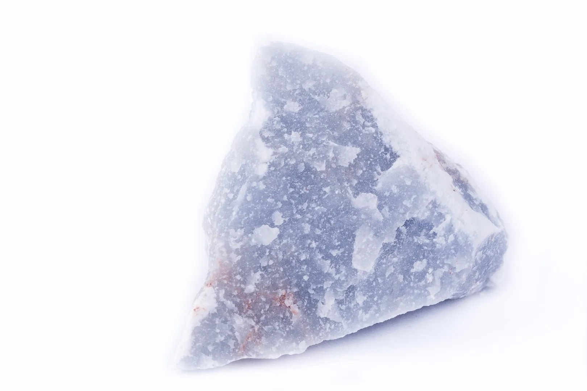

High-purity anhydrite gypsum for construction, cement manufacturing, and industrial applications
Anhydrite is a naturally occurring mineral composed of anhydrous calcium sulfate (CaSO₄). Unlike gypsum, anhydrite contains no water, which provides higher density, greater hardness and improved thermal stability. It typically appears white to grey and is sourced from sedimentary deposits or as a by-product of industrial processes.
Chemical formula: CaSO4
Medora Group supplies premium-grade anhydrite with high purity and consistent quality. Our product is an environmentally friendly and cost-effective alternative to natural gypsum, available in custom particle sizes to suit your process requirements.
Minimum 95% CaSO₄ content with consistent quality
Multiple uses across construction and industrial sectors
By-product of hydrofluoric acid production

Our anhydrite meets stringent quality standards for industrial applications
| Parameter | Guaranteed Value | Typical Value | Analysis Method |
|---|---|---|---|
| CaSO₄ | Min 95% | 97% | Calculation |
| SO₃ | 54% | 57% | XRF |
| CaO | 0.5 - 1.5% | 1% | Titration |
| CaF₂ | Max 3.0% | 2.0% | Gravimetric |
| SiO₂ | Max 0.40% | 0.20% | XRF |
| Fe₂O₃ | 0.10 - 0.20% | 0.15% | XRF |
| Al₂O₃ | Max 0.5% | 0.15% | XRF |
| MgO | Max 0.5% | 0.10% | XRF |
| pH | 10 - 12.5 | 11.0 | Potentiometric |
| H₂O 45°C | Max 0.3% | 0.2% | Gravimetric |
| H₂O 550°C | Max 0.8% | 0.6% | Gravimetric |
| Parameter | Typical Value | Analysis Method |
|---|---|---|
| Appearance | Greyish white powder | Visual |
| +15 mm | 0% | Dry sieve analysis |
| +0.5 mm | 70% | Dry sieve analysis |
Note: All specifications verified by independent laboratory testing. Bulk shipment available.
Versatile industrial mineral with diverse applications across multiple sectors
Used as a binder in flooring systems and plasters.
Serves as a setting regulator in cement and as a substitute for gypsum in certain
applications.
Ideal for anhydrite screeds, offering high strength and excellent thermal conductivity for
underfloor heating systems.
Source of sulfur and calcium for the production of various industrial compounds.
Used in acid neutralization and as a filler in chemical formulations for diverse industrial
processes.
Improves soil structure and calcium balance in agricultural lands.
Used to neutralize
sodium-rich soils and enhance crop yield through improved soil conditions.
Employed as a drying agent in chemical processes. Used as a filler in plastics, paints, and
paper industries.
Plays a role in environmental applications such as flue-gas
desulfurization and waste treatment.
Optimal handling and storage solutions for anhydrite
Under normal storage conditions, this product will not undergo chemical degradation. Store in a dry, well-ventilated area away from moisture.
Available in bulk shipments with customized packaging solutions available upon request to meet specific customer requirements.
Efficient global supply chain with flexible shipping options to ensure timely delivery to your location.
Rigorous quality control processes ensure consistent product specifications and performance in all applications.
Contact us for technical specifications, pricing, and shipment details
Contact Our Team